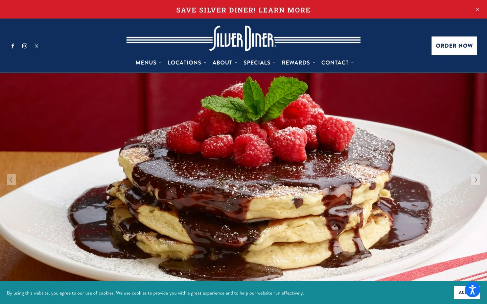

References / Website / 331
Silver Diner website
A diner chain’s site whose header carries the brand’s streamline mark: a script name between two sets of triple speed lines on navy.
- Source
- silverdiner.com
- Creator
- Silver Diner
- Style
- Streamline Moderne (agent-proposed, not yet reviewed by a person)
- Moods
- Retro, friendly, commercial
- Evidence
- Captured with
tools/capture.mjs(headless Chrome, 1440 × 900) on 28 September 2026 and inspected. A cookie banner covers the bottom 70 px and an accessibility button sits at lower right; neither hides the header. - Reviewed
- Rights
- Third-party work, stored with credit for commentary. License: unverified. Rights policy
Context
Silver Diner is a restaurant chain in the diner tradition; its logo draws the name in tall script between horizontal speed lines. The site states no designer.
Observed
- A red band at the top carries “SAVE SILVER DINER! LEARN MORE” in spaced serif capitals.
- The navy header centers the “Silver Diner” logo in tall, condensed white script; three parallel white lines run out from each side of the name almost to the header’s full width.
- The navigation below is in white sans-serif capitals: Menus, Locations, About, Specials, Rewards, Contact. An “ORDER NOW” button at right is a white rectangle with square corners.
- The rest of the viewport is a slider photograph of pancakes with chocolate sauce and raspberries on a red booth background.
Why it belongs
The speed lines live in the logo image, so the measurement cannot see them: color.patternShare and surface.patternShare are 0. The header is centered (type.centerShare 0.87), and every box has square corners (radius median 0). The site passes only the uppercase and gradient metrics of the fingerprint.
It is the clearest live website found for this style. Real sites use streamline as a logo and a palette, not as a layout.
Borrow
Run three thin parallel rules out from both sides of a centered wordmark to the edges of the header.
Measured
Machine-extracted by tools/extract-traits.js on . Full measurement.
- Type families
- brandon-grotesque (98%), Roboto Slab (2%)
- Type scale ratio
- 1.59
- Median radius
- 0 px
- Mean chroma
- 0.26
- Palette
- #102e5d 39%
- #000000 23%
- #158a97 19%
- #ffffff 12%
- #bd2b28 4%
- #d51c29 3%

